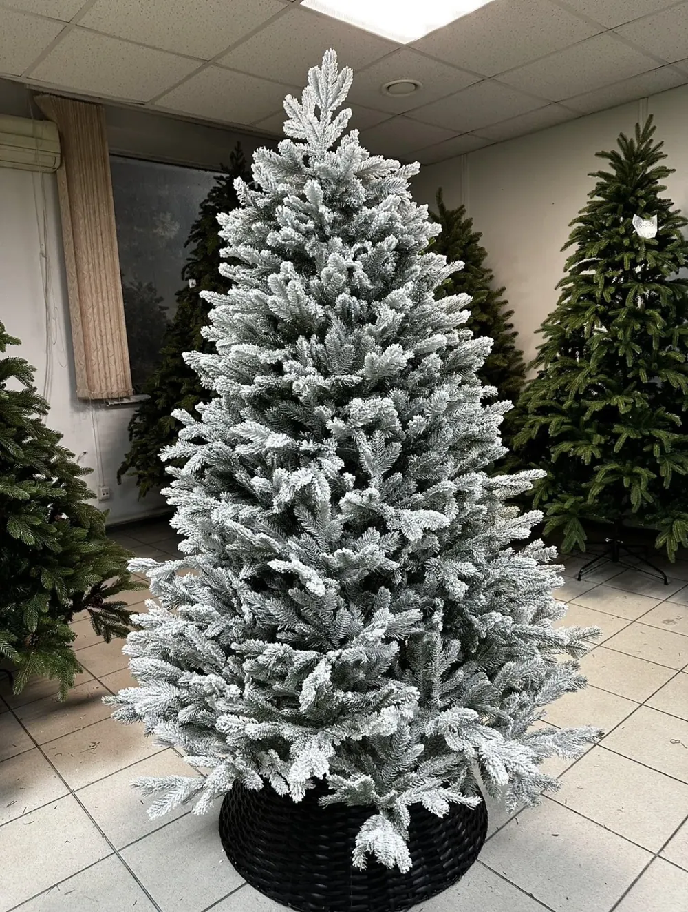
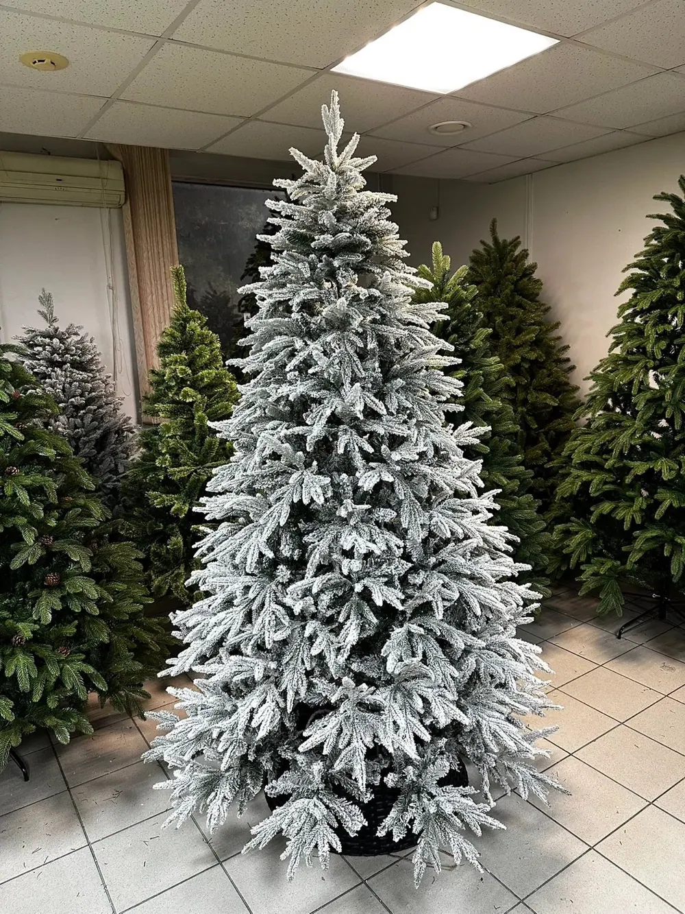
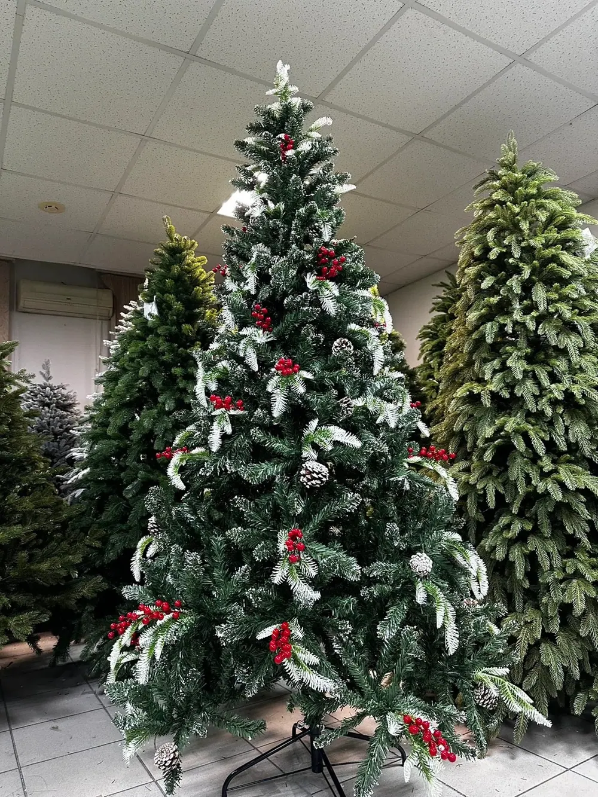
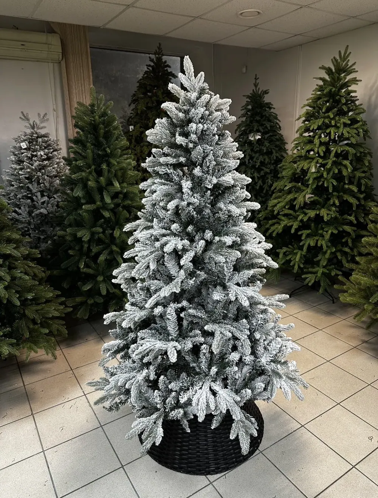

Заснеженные искусственные ёлки в Хабаровске
Заснеженные ёлки создают атмосферу зимнего леса даже без игрушек. Выбирайте по высоте, модели и стоимости; наличие уточняйте перед покупкой. В магазине СЕЗОНЩИК можно посмотреть ёлки вживую: ул. Зелёная, 10. Отправляем заказы по всей России.
Каталог: заснеженные ёлки — 4 моделей


АРТИКУЛ СЕ-69172
Зимняя сказка
Комбинированная хвоя · заснеженная, с шишками · 150, 180, 210 см
от 6 990 ₽Размеры и цены →




АРТИКУЛ 2229
Снежный Бархат
Заснеженная · комбинированная хвоя · 180, 210 см
от 12 400 ₽Размеры и цены →Как выбрать заснеженные ёлки?
Заснеженные ёлки создают атмосферу зимнего леса даже без игрушек. Выбирайте по высоте, модели и стоимости; наличие уточняйте перед покупкой. В карточке товара указываются конкретные доступные в каталоге высоты и стоимость каждой. Если сомневаетесь, напишите нам — поможем подобрать подходящую модель под высоту потолка и ваш бюджет.
Посмотреть ёлки можно в Хабаровске по адресу: Зелёная, 10, 2 этаж, офис 207а. Работаем ежедневно с 11:00 до 19:00. Перед поездкой рекомендуем уточнить наличие. Возможна отправка по России; стоимость зависит от города и способа доставки.